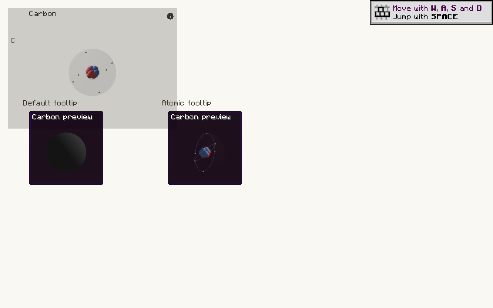

Avogadro guide · Minecraft 1.12.2 / Cleanroom
Add atom details
Make the atom viewer show a particular isotope or ion. For example, give methanol a
carbon-13 atom, or show sodium chloride as charged atoms. You supply the proton, neutron,
and electron counts through AtomicConfiguration.
Calls used in the examples
| Call or setting | Arguments | What it does |
|---|---|---|
AtomicConfiguration(protons, neutrons, charge, shells)
|
Nuclear counts; charge; electron-shell list | Supply the data the atom inspector should display. |
edit().atomConfiguration(index, configuration)
|
Zero-based atom index; configuration | Apply the data to an edited copy of the structure. |
fragment()
|
No arguments | Return the edited fragment for use in a new definition. |
When you finish: A builder creates a model but does not add it to the
game. Java registrations use a name, called an owner, to group the definitions your mod
controls; choose your mod ID. A RegistrationJob lets you cancel pending work
or remove its installed set later. JSON and Groovy registrations use their file or script
loading rules instead. Keep drawing and exports in client code.
Java imports
import io.github.wurtzitane.avogadro.api.*;
import io.github.wurtzitane.avogadro.molecule.*;
// Client code only:
import io.github.wurtzitane.avogadro.api.client.*;
import io.github.wurtzitane.avogadro.client.export.*;
import java.util.List;
import java.util.Map;Set the protons, neutrons, and electrons of an atom
The first example changes the carbon in a copy of methanol to carbon-13: six protons, seven neutrons, and six electrons in shells of two and four. It leaves the original methanol unchanged. Register the resulting model before trying to inspect it in game.
| Value | Meaning | Example |
|---|---|---|
| Atomic number Z | Proton count | Carbon: 6 |
| Neutrons N | Neutron count | Carbon-13: 7 |
| Charge | Positive means electrons removed | Na+: +1 |
| Shell counts | Electrons in each authored shell; sum must equal Z − charge | Na+: [2, 8] |
| Atom index | Zero-based position in the current fragment | Methanol’s carbon in our recipe: 0 |
| JSON field / location | Meaning | Example |
|---|---|---|
atomic_
|
Proton count. | Carbon: 6 |
neutrons |
Neutron count. | Carbon-13: 7 |
charge |
Positive means electrons removed; defaults to zero. | Na+: 1 |
electron_
|
Electrons in each shell; the sum must equal atomic_number − charge. | Na+: [2, 8] |
atom_ or local
atoms[].
|
Assign atomic data to a specific atom. For network fragments, use local nuclear data. | The string key "0" selects the first atom. |
Java · add this method to your class.
public static StructureFragment carbon13Methanol() {
return methanol().edit()
.atomConfiguration(0, new AtomicConfiguration(6, 7, 0, List.of(2, 4))).fragment();
}
public static StructureFragment methanol() {
// Fragment positions already line up. link() only adds the O–C bond.
return StructureAssembly.builder().part("methyl", methyl()).part("hydroxyl", hydroxyl())
.link("methyl/carbon", "hydroxyl/oxygen", BondType.SINGLE).build().build(); // recipe first, then finite geometry
}
public static StructureFragment methyl() {
return new StructureBuilder().atom("C", 0, 0, 0).atom("H", -.36, 1.03, 0).atom("H", -.36, -.515, .892)
.atom("H", -.36, -.515, -.892).bond(0, 1).bond(0, 2).bond(0, 3).attachment("carbon", 0).build();
}
public static StructureFragment hydroxyl() {
// An open O site for assembly; this piece alone is not an alcohol.
return new StructureBuilder().atom("O", 1.43, 0, 0).atom("H", 1.8, .85, 0).bond(0, 1).attachment("oxygen", 0)
.build();
}Groovy · same API; place methods in your script or client helper as described.
static StructureFragment carbon13Methanol() {
return methanol().edit()
.atomConfiguration(0, new AtomicConfiguration(6, 7, 0, List.of(2, 4))).fragment();
}
public static StructureFragment methanol() {
// Fragment positions already line up. link() only adds the O–C bond.
return StructureAssembly.builder().part("methyl", methyl()).part("hydroxyl", hydroxyl())
.link("methyl/carbon", "hydroxyl/oxygen", BondType.SINGLE).build().build(); // recipe first, then finite geometry
}
public static StructureFragment methyl() {
return new StructureBuilder().atom("C", 0, 0, 0).atom("H", -.36, 1.03, 0).atom("H", -.36, -.515, .892)
.atom("H", -.36, -.515, -.892).bond(0, 1).bond(0, 2).bond(0, 3).attachment("carbon", 0).build();
}
public static StructureFragment hydroxyl() {
// An open O site for assembly; this piece alone is not an alcohol.
return new StructureBuilder().atom("O", 1.43, 0, 0).atom("H", 1.8, .85, 0).bond(0, 1).attachment("oxygen", 0)
.build();
}JSON · one definition per file unless a different destination is shown.
{
"copy": "guide:methanol",
"atom_configurations": {
"0": {
"atomic_number": 6,
"neutrons": 7,
"charge": 0,
"electron_shells": [
2,
4
]
}
}
}Show sodium and chloride as charged atoms
This builds a sodium ion with eleven protons and ten electrons. The +1 charge and shell counts [2, 8] must agree; inconsistent counts are rejected. The chloride configuration in the salt example is supplied separately.
Java · add this method to your class.
public static MoleculeSpec sodiumIon() {
return AvogadroApi.builder("guide:sodium_ion").name("Sodium ion")
.atom("Na", 0, 0, 0).noBonds().atomConfiguration(0, 11, 12, 1, 2, 8).build();
}Groovy · same API; place methods in your script or client helper as described.
static MoleculeSpec sodiumIon() {
return AvogadroApi.builder("guide:sodium_ion").name("Sodium ion")
.atom("Na", 0, 0, 0).noBonds().atomConfiguration(0, 11, 12, 1, 2, 8).build();
}JSON · one definition per file unless a different destination is shown.
{
"name": "Sodium ion",
"atoms": [
{
"e": "Na",
"x": 0,
"y": 0,
"z": 0
}
],
"bonds": [],
"atom_configurations": {
"0": {
"atomic_number": 11,
"neutrons": 12,
"charge": 1,
"electron_shells": [
2,
8
]
}
}
}
Use element(symbol, for a neutral per-symbol
default, or atom for a specific atom/ion. The salt example
supplies Na+ and Cl− separately. SMILES isotope/charge notation does not automatically
populate the examiner’s nuclear data.
| Validation | Rule |
|---|---|
| Protons | 0–1,000; zero requires neutrons and zero charge |
| Neutrons | 0–10,000 |
| Shells | At most 32; each shell respects 2n² capacity |
| Electrons | Shell sum equals Z − charge |
| Charge | −1,000 through Z |
| Editing to another element | Clears the old atom-specific configuration |
| Missing data | No guessed neutron count from rounded atomic weight |
Let readers open the components of a mixture
The water-and-ethanol example adds links to its component definitions in the examiner. Supply and register those targets as well as the mixture. A component link lets a reader inspect another model; it does not add that model’s atoms.
Java · add this method to your class.
public static MoleculeSpec waterAndEthanol() {
// Component references add inspection links, not geometry.
return AvogadroApi.builder("guide:water_ethanol_pair").name("Water and ethanol")
.smiles("[H]O[H].CCO").component("guide:water").component("guide:ethanol")
.classification(MoleculeClassification.MIXTURE)
.inspectionMetadata("note", "One molecule of each; an illustrative pair, not a bulk concentration.")
.build();
}Groovy · same API; place methods in your script or client helper as described.
static MoleculeSpec waterAndEthanol() {
// Component references add inspection links, not geometry.
return AvogadroApi.builder("guide:water_ethanol_pair").name("Water and ethanol")
.smiles("[H]O[H].CCO").component("guide:water").component("guide:ethanol")
.classification(MoleculeClassification.MIXTURE)
.inspectionMetadata("note", "One molecule of each; an illustrative pair, not a bulk concentration.")
.build();
}JSON · one definition per file unless a different destination is shown.
{
"name": "Water and ethanol",
"smiles": "[H]O[H].CCO",
"components": [
"guide:water",
"guide:ethanol"
],
"inspection": {
"classification": "MIXTURE",
"note": "One molecule of each; illustrative, not a bulk concentration."
}
}Register the component targets too. References add inspection links; they do not append atoms. The disconnected SMILES supplies the actual geometry. A pair of molecules does not define a real solution’s concentration.
Calculate mass from average atomic weights
Java · add this method to your class.
public static MoleculeWeight.Result mass() {
// Uses standard element weights, not isotope-specific measured masses.
return AvogadroApi.weight("C9H8O4");
}Groovy · same API; place methods in your script or client helper as described.
static MoleculeWeight.Result mass() {
// Uses standard element weights, not isotope-specific measured masses.
return AvogadroApi.weight("C9H8O4");
}
result. is grams per mole;
grams is grams per entity. Formatting helpers provide
ready-to-show text. Unknown element weights can make the result unavailable: check for
null. Network mass belongs to the selected finite realization; a bulk network
has no single molecular mass.
Inspect and export
Wall posters use normal world lighting, including the shader pack’s shadows and Pulsar’s RGB lighting when enabled. The frame and artwork share the same lighting. Held, dropped, and framed table items also use world lighting. Wall poster brightness and Table item brightness are separate client settings (0.25–1.0; defaults 0.75 and 0.85). Use shader brightness profiles selects editable defaults for BSL (wall 1.0, item 1.0), Reimagined (wall 0.60, item 0.80) and Unbound (wall 0.65, item 0.80), including their Euphoria variants. Disable it to use the general values. These settings adjust the surface before lighting; they do not change GUI colors, shadow behavior, or another player's view. Full-bright wall posters is an optional unlit display mode; it does not receive world shadows. Shader packs control the final color grading and post-processing of normally lit posters. Printed labels stay flat under supported BSL and Complementary packs. Close-up lettering uses exact artwork pixels, while distant and angled views retain mipmap filtering. BSL keeps bloom and temporal smoothing off the printed surface so its labels stay clear. Lighting, shadows, exposure, and color grading still apply. See shader pack recommendations for the Pulsar RGB compatibility notes.
Sneak-right-click a generated atom item to open its atom viewer. In HEI, a single-atom element card shows its nucleus, electrons, and cloud. Click it to open the atom viewer directly, or drag to rotate it. Other molecule cards open their examiner with Shift+N. Click an atom there for details; Space/Pause freezes rotation and electron motion. The complete reference card fits without scrolling. If the window is too small, the viewer shows its minimum GUI dimensions; enlarge the window or choose a smaller UI scale.
Item tooltips keep the solid molecular ball by default. Hold Left Ctrl to show a single element’s atomic model at the same size, position, and rotation. In Mod Options → Avogadro → Tooltips → Atomic tooltip key mode, choose HOLD or TOGGLE. Toggle lasts until the menu closes or loses focus. Rebind Atomic tooltip preview in Controls → Avogadro. This affects single-atom elements; O2 and other multi-atom structures keep their molecular preview.
At normal zoom, atom balls remain opaque. Zoom in to reveal nuclei, electrons and their paths. Molecules with fewer atoms reach this view earlier. Particle visibility and viewer settings change the display while preserving the bond graph. Cards, tooltips, the atom viewer, and exports use the same supplied isotope and charge data.


The atomic export example uses the same supplied data. For invented nuclei, see the clearly labeled fictional appendix.
Highlight an element category
Right-click a category label on a wall painting to flash its element symbols. Players tracking that painting receive the same category event from the server, then use their own flash color, count and speed. The detached Lanthanoids and Actinoids row labels work too. In the table screen, either mouse button starts the same highlight. The painting changes its existing artwork labels, keeping their original font, placement and lighting.
Under Mod Options → Avogadro → Periodic table, choose
Category flash color as a hex value such as #FF0000,
Category flash count (0–20; 0 disables it), and
Category pulse duration (20–5000 ms for one complete fade in and out). The
defaults are red, two pulses and 220 ms per pulse. A shorter duration flashes faster.
Changes apply to the next click.
With Offscreen installed, Pop out moves the viewer into a desktop window and closes the in-game menu once the window is ready.